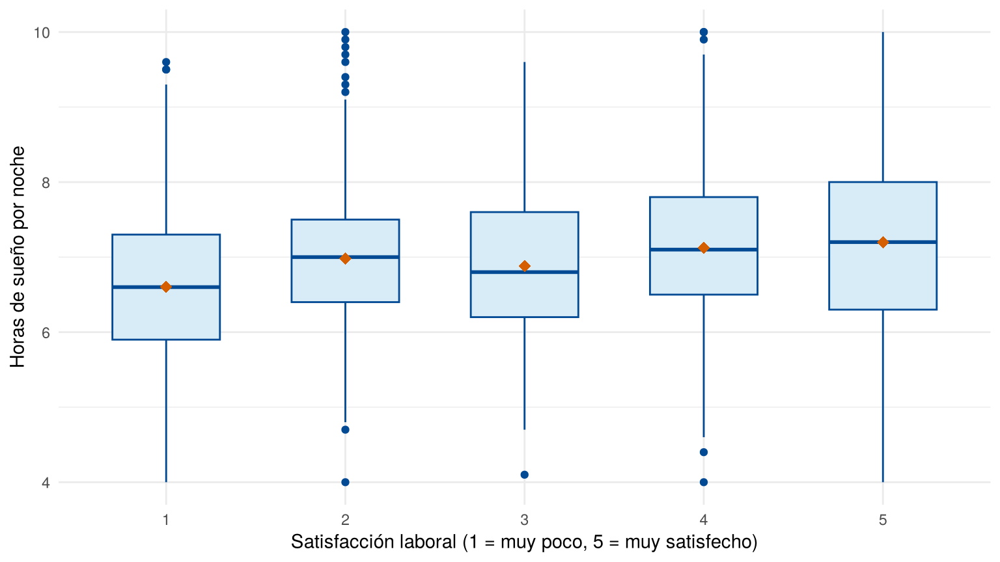
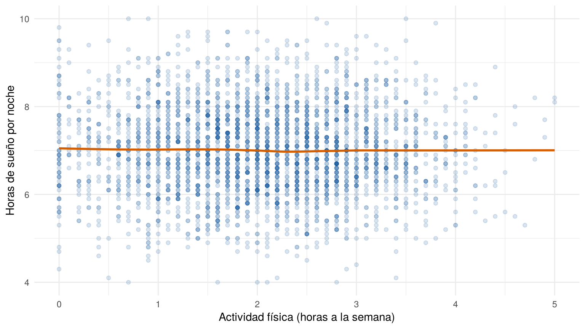
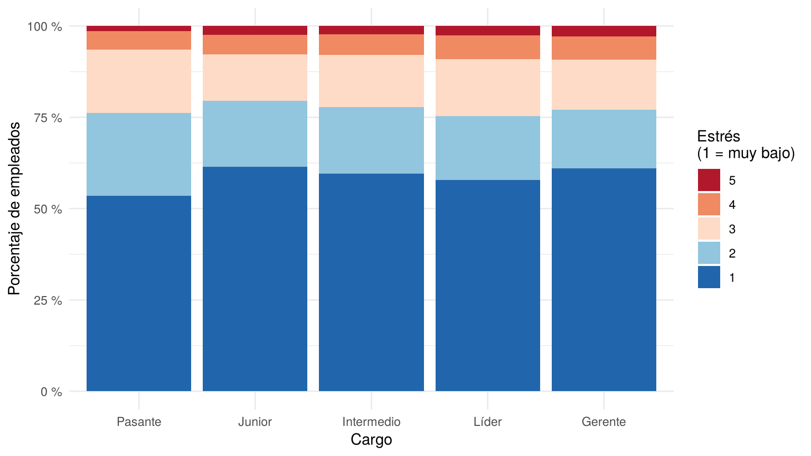
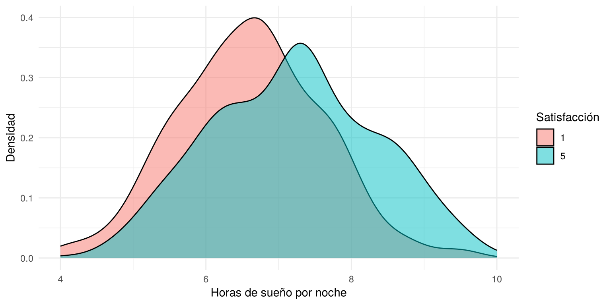

Un caso muestra un estudio descriptivo completo, de los objetivos a las conclusiones, con los métodos de esta unidad. Sirve como modelo para la Actividad 1: qué se hace en cada paso, cómo se escribe cada resultado y qué no se debe concluir.
Esta página usa la base encuesta_empleados.xlsx y los
paquetes readxl, e1071 y ggplot2.
Los bloques de código se ejecutan en orden.
library(readxl)
library(e1071)
library(ggplot2)El equilibrio entre la vida personal y el trabajo influye en el bienestar de los empleados. La satisfacción con el trabajo no depende solo del entorno laboral: también se relaciona con el descanso, la salud y las responsabilidades fuera del trabajo.
Una empresa encuestó a sus 3,025 empleados y registró 23 variables sobre su trabajo y sus hábitos. El área de talento humano quiere saber si el descanso, el ejercicio y el estrés se relacionan con la satisfacción y con el cargo, para orientar sus programas de bienestar.
Objetivo general. Describir la relación entre los hábitos de descanso y ejercicio, el estrés, la satisfacción laboral y el cargo de los empleados.
Objetivos específicos.
Los tres objetivos empiezan con un verbo que se puede cumplir con los datos (comparar, describir). Un estudio descriptivo no puede demostrar que una variable cause otra, así que los objetivos no lo prometen.
La base tiene los nombres de las variables en inglés. Se seleccionan las cinco que piden los objetivos y se les da un nombre en español.
encuesta <- read_excel("data/encuesta_empleados.xlsx")
dim(encuesta)[1] 3025 23empleados <- data.frame(
satisfaccion = encuesta$JobSatisfaction,
sueno = encuesta$SleepHours,
actividad = encuesta$PhysicalActivityHours,
estres = encuesta$Stress,
cargo = encuesta$JobLevel
)
head(empleados) satisfaccion sueno actividad estres cargo
1 5 7.6 2.5 1 Intermedio
2 5 7.9 1.8 2 Intermedio
3 5 6.5 2.1 4 Pasante
4 5 7.5 1.9 1 Junior
5 5 4.9 3.7 1 Junior
6 5 6.2 1.4 2 IntermedioTabla 1. Descripción y clasificación de las variables.
| Variable | Nombre en la base | Descripción | Valores | Clasificación |
|---|---|---|---|---|
satisfaccion |
JobSatisfaction |
Satisfacción con el trabajo | 1 (muy poco satisfecho) a 5 (muy satisfecho) | Cualitativa ordinal |
sueno |
SleepHours |
Horas de sueño por noche | 4 a 10 horas | Cuantitativa continua |
actividad |
PhysicalActivityHours |
Horas de actividad física a la semana | 0 a 5 horas | Cuantitativa continua |
estres |
Stress |
Nivel de estrés percibido | 1 (muy bajo) a 5 (muy alto) | Cualitativa ordinal |
cargo |
JobLevel |
Cargo del empleado | Pasante, Junior, Intermedio, Líder, Gerente | Cualitativa ordinal |
La satisfacción y el estrés se registran con números, pero son escalas ordinales: el 4 indica más satisfacción que el 2, pero no el doble. Por eso se resumen con porcentajes y medianas, no con medias. El cargo se ordena de menor a mayor jerarquía; la base no trae ese orden, así que es un supuesto del estudio.
empleados$cargo <- factor(empleados$cargo,
levels = c("Pasante", "Junior", "Intermedio", "Líder", "Gerente"))
empleados$satisfaccion <- factor(empleados$satisfaccion, levels = 1:5)Antes de describir, se revisan duplicados, faltantes y valores imposibles (¿Cómo organizar los datos?).
sum(duplicated(encuesta$EmpID))[1] 0colSums(is.na(empleados))satisfaccion sueno actividad estres cargo
0 0 0 0 0 range(empleados$sueno)[1] 4 10range(empleados$actividad)[1] 0 5table(empleados$cargo, useNA = "ifany")
Pasante Junior Intermedio Líder Gerente
202 602 766 386 1069 No hay identificadores repetidos ni datos faltantes, los rangos son posibles y todos los cargos son válidos. La base se puede usar sin depurar.
Se describe cada variable por separado antes de cruzarlas (Indicadores estadísticos).
indicadores <- function(x) {
c(Mínimo = min(x), Q1 = unname(quantile(x, 0.25)), Mediana = median(x),
Media = mean(x), Q3 = unname(quantile(x, 0.75)), Máximo = max(x),
`CV (%)` = 100 * sd(x) / mean(x), Asimetría = skewness(x, type = 3),
Curtosis = kurtosis(x, type = 3))
}
tabla2 <- rbind(`Sueño (horas)` = indicadores(empleados$sueno),
`Actividad física (horas a la semana)` = indicadores(empleados$actividad))
tabla2 <- data.frame(Variable = rownames(tabla2), round(tabla2, 2), check.names = FALSE)
knitr::kable(tabla2, row.names = FALSE, caption = "Tabla 2. Indicadores de las variables cuantitativas")| Variable | Mínimo | Q1 | Mediana | Media | Q3 | Máximo | CV (%) | Asimetría | Curtosis |
|---|---|---|---|---|---|---|---|---|---|
| Sueño (horas) | 4 | 6.3 | 7 | 7.01 | 7.7 | 10 | 14.31 | 0.08 | -0.13 |
| Actividad física (horas a la semana) | 0 | 1.3 | 2 | 2.03 | 2.7 | 5 | 47.60 | 0.02 | -0.43 |
porcentaje <- function(x) round(100 * prop.table(table(x, dnn = NULL)), 1)
porcentaje(empleados$satisfaccion) 1 2 3 4 5
13.8 9.2 18.7 41.3 17.1 porcentaje(empleados$estres) 1 2 3 4 5
59.8 17.7 14.1 5.9 2.5 porcentaje(empleados$cargo) Pasante Junior Intermedio Líder Gerente
6.7 19.9 25.3 12.8 35.3 Para comparar una variable numérica entre grupos se usan cajas o densidades por grupo y una tabla de indicadores por grupo (¿Qué tipos de gráficos existen?).
ggplot(empleados, aes(x = satisfaccion, y = sueno)) +
geom_boxplot(fill = "#D8ECF7", color = "#034A94", width = 0.6) +
stat_summary(fun = mean, geom = "point", shape = 18, size = 3, color = "#D55E00") +
labs(x = "Satisfacción laboral (1 = muy poco, 5 = muy satisfecho)",
y = "Horas de sueño por noche") +
theme_minimal()
Horas de sueño según el nivel de satisfacción laboral
tabla3 <- do.call(rbind, tapply(empleados$sueno, empleados$satisfaccion, indicadores))
tabla3 <- cbind(n = as.vector(table(empleados$satisfaccion)), tabla3,
`Duerme 7 h o más (%)` = 100 * tapply(empleados$sueno >= 7,
empleados$satisfaccion, mean))
tabla3 <- data.frame(Satisfacción = 1:5, round(tabla3, 2), check.names = FALSE)
knitr::kable(tabla3, row.names = FALSE,
caption = "Tabla 3. Horas de sueño según el nivel de satisfacción laboral")| Satisfacción | n | Mínimo | Q1 | Mediana | Media | Q3 | Máximo | CV (%) | Asimetría | Curtosis | Duerme 7 h o más (%) |
|---|---|---|---|---|---|---|---|---|---|---|---|
| 1 | 417 | 4.0 | 5.9 | 6.6 | 6.60 | 7.3 | 9.6 | 15.08 | 0.09 | -0.03 | 34.77 |
| 2 | 277 | 4.0 | 6.4 | 7.0 | 6.98 | 7.5 | 10.0 | 13.85 | 0.33 | 0.60 | 50.90 |
| 3 | 566 | 4.1 | 6.2 | 6.8 | 6.88 | 7.6 | 9.6 | 13.32 | 0.11 | -0.30 | 43.29 |
| 4 | 1249 | 4.0 | 6.5 | 7.1 | 7.12 | 7.8 | 10.0 | 13.29 | 0.01 | -0.08 | 57.17 |
| 5 | 516 | 4.0 | 6.3 | 7.2 | 7.20 | 8.0 | 10.0 | 15.77 | 0.00 | -0.59 | 59.50 |
Cuidado con la conclusión. Los datos muestran una asociación: los empleados más satisfechos tienden a dormir algo más. No muestran que dormir más aumente la satisfacción ni lo contrario, porque las dos variables se midieron al mismo tiempo y otras variables, como la carga de trabajo, pueden influir en ambas (Conceptos básicos). Tampoco se puede llamar a la diferencia significativa: esa palabra exige una prueba estadística, que se estudia en la Unidad 2.
Para dos variables cuantitativas se usa un diagrama de dispersión (¿Cómo graficar relaciones y cambios en el
tiempo?). Con 3,025 puntos, muchos quedan uno encima de otro; la
transparencia (alpha) deja ver dónde se acumulan.
ggplot(empleados, aes(x = actividad, y = sueno)) +
geom_point(alpha = 0.15, color = "#034A94") +
geom_smooth(method = "loess", se = FALSE, color = "#D55E00") +
labs(x = "Actividad física (horas a la semana)", y = "Horas de sueño por noche") +
theme_minimal()
Horas de sueño según las horas de actividad física semanal
La línea naranja resume la tendencia: muestra el promedio aproximado del sueño para cada valor de actividad física. Para confirmarlo con números, se agrupa la actividad física en intervalos y se compara el sueño en cada uno.
grupo_actividad <- cut(empleados$actividad, breaks = c(0, 1, 2, 3, 5),
right = FALSE, include.lowest = TRUE)
tabla4 <- do.call(rbind, tapply(empleados$sueno, grupo_actividad,
function(x) c(n = length(x), Q1 = unname(quantile(x, 0.25)),
Mediana = median(x), Media = mean(x),
Q3 = unname(quantile(x, 0.75)))))
tabla4 <- data.frame(`Actividad (horas a la semana)` = rownames(tabla4), round(tabla4, 2),
check.names = FALSE)
knitr::kable(tabla4, row.names = FALSE,
caption = "Tabla 4. Horas de sueño según las horas de actividad física semanal")| Actividad (horas a la semana) | n | Q1 | Mediana | Media | Q3 |
|---|---|---|---|---|---|
| [0,1) | 439 | 6.3 | 7 | 7.00 | 7.7 |
| [1,2) | 962 | 6.3 | 7 | 7.03 | 7.7 |
| [2,3) | 1105 | 6.3 | 7 | 6.99 | 7.7 |
| [3,5] | 519 | 6.4 | 7 | 7.01 | 7.6 |
Un resultado sin relación también es un resultado, y se reporta. En un estudio real convendría revisar cómo se midieron las dos variables: si se reportaron de memoria, el error de medición puede ocultar una relación.
Para dos variables cualitativas se usa una tabla cruzada con porcentajes por fila y un gráfico de barras apiladas al 100 % (¿Cómo graficar variables categóricas?). Los porcentajes se calculan dentro de cada cargo, porque los cargos tienen tamaños muy distintos: hay 202 pasantes y 1,069 gerentes.
tabla5 <- round(100 * prop.table(table(empleados$cargo, empleados$estres), margin = 1), 1)
tabla5 <- data.frame(Cargo = rownames(tabla5), unclass(tabla5), check.names = FALSE)
knitr::kable(tabla5, row.names = FALSE, caption = "Tabla 5. Nivel de estrés según el cargo (porcentaje por fila)")| Cargo | 1 | 2 | 3 | 4 | 5 |
|---|---|---|---|---|---|
| Pasante | 53.5 | 22.8 | 17.3 | 5.0 | 1.5 |
| Junior | 61.5 | 18.1 | 12.6 | 5.3 | 2.5 |
| Intermedio | 59.5 | 18.3 | 14.2 | 5.6 | 2.3 |
| Líder | 57.8 | 17.6 | 15.5 | 6.5 | 2.6 |
| Gerente | 61.0 | 16.1 | 13.7 | 6.5 | 2.8 |
ggplot(empleados, aes(x = cargo, fill = factor(estres, levels = 5:1))) +
geom_bar(position = "fill") +
scale_y_continuous(labels = function(x) paste0(100 * x, " %")) +
scale_fill_manual(values = c("#B2182B", "#EF8A62", "#FDDBC7", "#92C5DE", "#2166AC"),
name = "Estrés\n(1 = muy bajo)") +
labs(x = "Cargo", y = "Porcentaje de empleados") +
theme_minimal()
Nivel de estrés según el cargo
round(100 * tapply(empleados$estres >= 4, empleados$cargo, mean), 1) Pasante Junior Intermedio Líder Gerente
6.4 7.8 8.0 9.1 9.3 Recomendación. Si la empresa quiere mejorar la satisfacción, el descanso es la variable que muestra relación en estos datos, y podría incluirse en sus programas de bienestar. Antes de invertir en ellos, conviene un estudio que siga a los mismos empleados en el tiempo, para saber si la relación es causal.
Limitaciones. Los datos son de un solo momento y autorreportados, y el orden de los cargos es un supuesto. Las diferencias se describen, pero no se prueban: eso se hace con los métodos de la Unidad 2.
| Problema | Causa | Solución |
|---|---|---|
| Se calcula la media del estrés o de la satisfacción | Se tratan como números porque se registraron con números | Son ordinales: usar porcentajes y medianas |
| Se comparan conteos entre cargos | Los cargos tienen tamaños distintos | Usar porcentajes por fila |
| Se escribe “diferencia significativa” | Se usa la palabra en sentido común | Sin una prueba, escribir “diferencia observada” |
| Se concluye que dormir más aumenta la satisfacción | Se confunde asociación con causalidad | Describir la asociación y nombrar otras explicaciones |
| Los puntos del diagrama de dispersión forman una mancha | Hay miles de puntos superpuestos | Usar alpha o agrupar una de las
variables |
| Las categorías del gráfico salen en orden alfabético | La variable es texto | Convertirla en factor() con el orden de
los niveles |
| Se describen todas las variables de la base | No se parte de los objetivos | Seleccionar solo las variables que piden los objetivos |
Grafique las densidades del sueño de los niveles 1 y 5 de satisfacción en el mismo gráfico. ¿Qué muestra que no muestren las cajas?
extremos <- subset(empleados, satisfaccion %in% c("1", "5"))
ggplot(extremos, aes(x = sueno, fill = satisfaccion)) +
geom_density(alpha = 0.5) +
labs(x = "Horas de sueño por noche", y = "Densidad", fill = "Satisfacción") +
theme_minimal()
La curva del nivel 5 está un poco a la derecha, pero las dos se traslapan casi por completo. La densidad muestra la forma completa de cada grupo; las cajas solo muestran cinco números, pero permiten comparar muchos grupos a la vez.
Calcule el porcentaje de empleados satisfechos o muy satisfechos (niveles 4 y 5) para cada nivel de estrés. ¿Hay relación?
satisfecho <- empleados$satisfaccion %in% c("4", "5")
round(100 * tapply(satisfecho, empleados$estres, mean), 1) 1 2 3 4 5
65.5 55.7 44.4 40.2 28.9 Sí. El porcentaje de satisfechos baja de 65.5 % entre quienes reportan estrés muy bajo a 28.9 % entre quienes reportan estrés muy alto, y baja en cada nivel. Es una asociación más marcada que la del sueño. El último porcentaje se calcula con solo 76 empleados (2.5 %), así que es menos preciso.
Un informe dice: “Los gerentes tienen más estrés que los pasantes, porque tienen más responsabilidades”. ¿Qué problemas tiene la frase?
Tiene tres problemas. La diferencia es pequeña (9.3 % frente a 6.4 % con estrés alto) y no se probó. La explicación “porque tienen más responsabilidades” es una causa que los datos no miden. Y la frase oculta que la mayoría de los empleados de todos los cargos reporta estrés muy bajo.
Escriba un objetivo específico sobre la carga de trabajo
(Workload, de 1 a 5) y la satisfacción, y diga con qué
tabla y qué gráfico lo respondería.
Por ejemplo: “Comparar la satisfacción laboral de los empleados según su carga de trabajo”. Las dos variables son ordinales, así que se usa una tabla cruzada con porcentajes por fila y un gráfico de barras apiladas al 100 %, como en el objetivo 3.
Última revisión: 13 de noviembre de 2026.